3．域的抽象理论
在伽罗瓦的著作里，由n个量a1，a2，…，an生成的域R，是指这些量经过加、减、乘和除（除去用0作除数以外）得到的一切量所构成的集合，而扩域这个概念就是添加R以外的一个新元素λ到R所形成的。他的域就是由一个方程的系数生成的域，他的扩张是经添加方程的一个根做成的。在戴德金和克罗内克关于代数数的著作里（第34章第3节），域这个概念有着完全不同的起源。事实上，“域（field）”（体Körper）这个词是出自戴德金。
域的抽象理论是由海因里希·韦伯开始的。他已经拥护群的抽象观点。在1893年(35)他曾经给伽罗瓦理论以抽象的阐述，其中他引进了（交换）域作为群的派生。按照海因里希·韦伯的说明，一个域是指一个由元素组成的集合，具有两种运算，叫做加法和乘法，都满足封闭条件、结合律、交换律以及分配律。而且每一个元素在每一种运算下必有一个唯一的逆元素（除去0作除数以外）。海因里希·韦伯强调群和域是代数的两个主要概念。稍后，迪克森(36)和亨廷顿(37)给出了一个域的独立的公理系统。
在19世纪已经知道的域有有理数域、实数域、复数域、代数数域和一个或多个变数的有理函数域。亨泽尔又发现了另一类型的域即p-进域，它在代数数方面开辟了新的工作［《代数数论》（Theorie der algebraischen Zahlen，1908）］。亨泽尔首先观察到任何一个普通整数D能够用一种方式而且只有一种方式表示成一个素数p的方幂的和，即
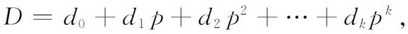
其中
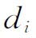
是适当的整数且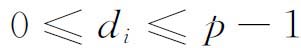
。例如，p＝3，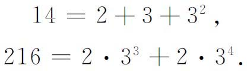
同样，任何有理数r（≠0）能唯一地写成
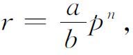
其中a，b是不能被p整除的整数，n是0或一个正或负的整数。亨泽尔根据这个观察推广并引进了p-进数。p-进数是如下形式的表达式：
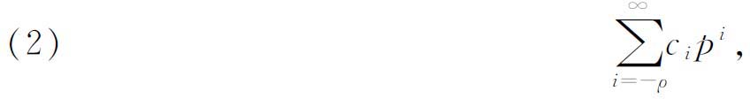
其中p是一个素数，系数
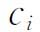
是普通有理数，已约简成最简分数，其分母不能被p整除。这种表达式一般并不一定有普通的数作为它的值。但无论如何，根据定义，它们表示数学实体。亨泽尔对这种数规定了四种基本运算，并证明它们是一个域。p-进数的一个子集能够和普通的有理数成一一对应，而且事实上这个子集就是在两个域同构的完整意义下同有理数域同构的。在p-进数的域内亨泽尔定义了p-进整数，单位（即p-进整数中的可逆元素）和其他类似于普通有理数中的那些概念。
亨泽尔引进了以p-进数作系数的多项式和这种多项式的p-进根的概念，而且把有关代数数域的所有概念推广到这些根上。这样就有p-进整代数数，更一般地就有p-进代数数，而且可以构成p-进代数数域，这是由（2）定义的“有理”的p-进数域的扩张。事实上，有关代数数的所有一般理论都可以搬到p-进数上。也许令人惊奇的是，p-进代数数的理论引出普通代数数的一些结果。在探讨二次型的理论中已经显出它的作用，而且导致赋值域的观念。
海因里希·韦伯的著作给予施泰尼茨（Ernst Steinitz，1871—1928）非常大的影响，在域的日益增长的变化的激励下，施泰尼茨着手对抽象域进行综合的研究；他把研究的成果都写进他的基本论文《域的代数理论》（Algebraischen Theorie der Körper）(38)。按照施泰尼茨的观点，一切域可以分成两个主要类型。设K是一个域。考虑K的所有子域（例如，有理数域是实数域的一个子域）。所有子域的公共元素也是一个子域，叫做K的素域，记为P。素域有两种可能的类型。单位元素e总是包含在P内，因而
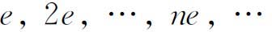
也包含在P内。这些元素，或者两两不相同，或者存在一个普通整数p使得pe＝0。在第一种情况P必须包含所有分数ne／me，由于这些元素形成一个域，所以P必须和有理数域同构。这时我们说K有特征0。
另一方面，如果pe＝0，容易证明，这样的p的最小者必是一个素数，因而域P必须和整数模p的同余类域｛0，1，2，…，p－1｝同构。这时我们说K是一个特征为p的域。K的任何一个子域都有同一特征。于是pa＝（pe）a＝0；这就是说，K中所有表达式可以按模p来化简。
不管素域P属于刚才描述过的哪一种类型，原来的域K可以从P经过添加的手续而得到。方法是：首先在K内取一个不在P内的元素a，并作a的系数属于P的有理函数，它们全体构成一个子域R（a），然后，如有必要，再在K内取一个不在R（a）内的元素b，按照对待a的办法来对待b，作出R（a）的扩张，如此继续进行直至满足需要。
从一个任意的域K出发，可以作出各种类型的添加。一个单纯的添加就是添加单个元素x。这个扩大了的域必包含所有如下形式的表达式：
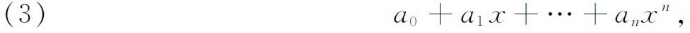
其中
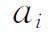
属于K。如果这些表达式两两不相等，那么这个扩域就是x的有理函数全体构成的域K（x），其系数属于K。这样的添加叫做一个超越添加，K（x）叫做一个超越扩张。如果（3）中表达式有某些彼此相等，可以证明，必定存在一个关系（这时用α代替x）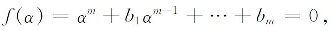
其中系数
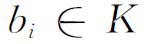
而且f（x）在K内不可约。这时表达式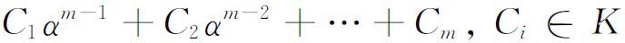
的全体构成一个域K（α），是由添加α到K而形成的。这个域叫做K的一个单纯代数扩张。f（x）在K（α）内有一个根α。反之，如果取定一个在K内不可约的任意多项式f（x），就可以造一个域K（α）使得f（x）在K（α）内有一个根。
由施泰尼茨获得的一个基本结果是，每一个域K可以从它的素域出发，经过如下的添加而得到：首先作一系列（可能无限多的）超越添加得到一个超越扩张，然后对这个超越扩张又作一系列代数添加。如果一个域K′能够从一个域K经过一串单纯代数添加而得到，就说K′是K的一个代数扩张。如果添加的次数是有限的，就说K′是K的有限代数扩张。
并不是每一个域都可以经过代数添加而扩大。例如复数域就不能这样扩大，因为每一个次数高于1的复系数多项式f（x）在复数域内是可约的。这种不能经代数添加而扩大的域叫做代数封闭的。施泰尼茨还证明：对于每一个域K，存在一个唯一的代数封闭域K′，而且K′是K的代数扩张。这里“唯一”的意思是，K上（包含K）所有其他代数封闭域恒包含一个与K′同构的子域。
施泰尼茨还考虑了这样一个问题：确定这样的域，在其中伽罗瓦的方程理论有效。我们说伽罗瓦理论在一个域中有效，意思是，一个给定域K上的伽罗瓦域K是一个代数域，而且K（x）中每一个不可约多项式f（x）在K上或者保持不可约或者完全分解成一次因式的乘积(39)。对每个伽罗瓦域
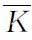
，都有一组自同构，每一个自同构是到自身上的一个映射α→α′，使得α±β和α·β分别映到α′±β′和α′·β′，而且它保持K中每一个元素不动（即元素对应到自身）。这组自同构形成一个群G，叫做关于K的伽罗瓦群。伽罗瓦理论的主要定理断言：在G的子群与K的子域（包含K）之间存在一个唯一的一一对应，使得对于G的每一个子群G′有一个子域K′与G′对应，而K′是由在G′下保持不动的元素全体组成；而且反之也对。只要这个定理在一个域中成立，就说伽罗瓦理论在这个域中有效。施泰尼茨的基本结果主要是说，如果一个域可从一个已知域K经过添加一系列无重根的不可约多项式的全部根而得到，则伽罗瓦理论在内有效。如果一个域K上的所有不可约多项式在K的任何扩域中都无重根，则K叫做完备的。如施泰尼茨的分类所指出的，域的理论还包含特征p的有限域。它的一个简单的例子就是整数模素数p所得到的余数的全体组成的集合。有限域的概念属于伽罗瓦。1830年他发表了一篇决定性的文章《关于数论》（Sur la théorie des nombres）(40)。伽罗瓦企望求解同余式
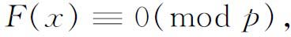
其中p是一个素数，F（x）是一个n次整系数多项式。他假设F（x）（mod p）不可约，使得这个同余式没有整根或无理根。这就迫使他去考虑其他的解。由虚数得到启示，伽罗瓦用i表示
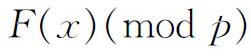
的一个根（i并不是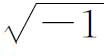
）。他于是考虑表达式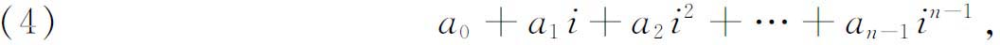
其中
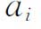
是整数。当这些系数都分别取（mod p）的最小非负剩余时，这个表达式只能取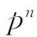
个值，因而只有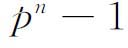
个非零的值。假设α是其中一个非零的值。α的一切方幂均取（4）的形式，因而这些方幂不能全相异。于是必定最少有一个方幂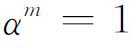
。假定m是满足这个等式的最小正整数。于是共有m个不同的值：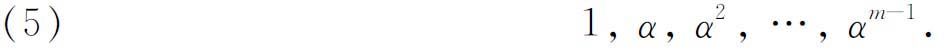
如果我们用（4）中另一个表达式β乘（5）中各元素，我们就得到不同于（5）的另外m个元素，它们彼此不同。再用上两组以外的另一表达式γ乘（5）中各元素，将得到更多这样的元素，直到我们得到形如（4）的全部表达式为止。因此，m必定整除
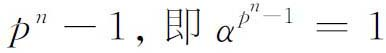
，因而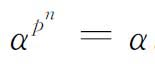
。（4）中这pn个元素组成一个有限域。伽罗瓦曾经就这个具体情况证明：在一个特征p的伽罗瓦域中，元素的个数是p的一个幂。穆尔(41)曾经证明，任何一个有限抽象域都与某一个伽罗瓦域同构，后者的元素个数为
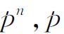
为某一素数。对于每一个素数p和每一个正整数n，都存在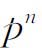
个元素的有限域。韦德伯恩（Joseph H．M．Wedderburn，1882—1948）是普林斯顿大学的教授(42)，他和迪克森同时证明了任何有限域必须是交换的（意思是说，域的乘法交换律可以从域的其余的公理推证出来。参看下一节）。为确定包含在伽罗瓦域内的加法群的构造以及域本身的构造，已做了大量的工作。